The study develops a density–hazard coupled global navigation framework for evacuation in irregular urban-village networks. A simplified network is used to select a practical hazard weight and field-update period before testing the operating point on 50 paired Shipai scenarios. Density-60 and DH-60 achieve similar mean tail clearance at the selected point, but their safety outcomes diverge sharply: relative to Static, DH-60 reduces population Soft Risk by 78.2% and Hard Harm by 99.9%, compared with 38.3% and 83.0% under Density-60. The result shows why evacuation efficiency and model-based exposure must be treated as distinct objectives.
matched runs per strategy
relative to Static routing
relative to Static routing
relative to Static routing
knee of the tested efficiency–exposure curve
selected tail-time–computation compromise
Fast is not always safe
Static shortest-path guidance ignores changing crowd state and hazard intensity. Density-aware guidance reacts to congestion, but it can redirect pedestrians through dangerous alternatives when it has no direct information about the hazard field.
Dynamic travel cost
SPH density and a calibrated speed–density relation update local travel-time cost as congestion evolves.
Continuous cost and blocking
Hazard intensity raises route cost before exposure accumulates and excludes cells beyond the hard threshold.
Separate tail and risk metrics
Tail clearance, Soft Risk, and Hard Harm reveal differences that mean evacuation time can miss.
A unified dynamic potential field
All three comparison strategies are parameter configurations of the same framework, which makes the role of density and hazard information explicit.
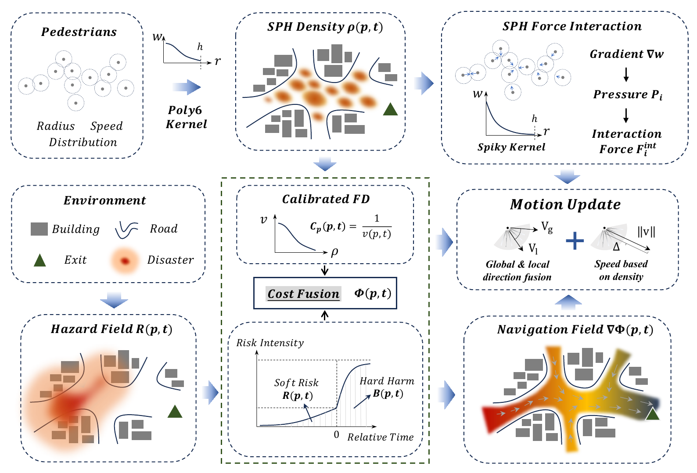
Pedestrian state and hazard state jointly update the navigation potential before motion is advanced.
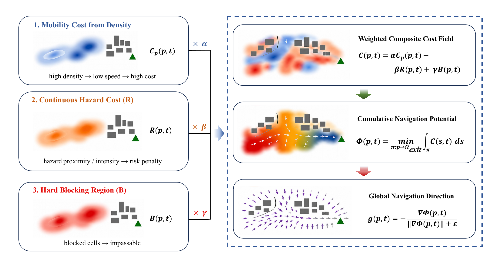
The density channel represents changing travel time; the hazard channel adds continuous exposure cost and exact blocking.
Adaptive rerouting after a local junction becomes impassable
An expanding hazard footprint erodes traversable cells around the marked junction until the original connection is removed from the feasible network. At the next guidance-field update, the potential is recomputed over the remaining passable cells and compliant pedestrians redirect toward available alternatives, limiting continued entry into the affected area and reducing modeled hazard exposure.
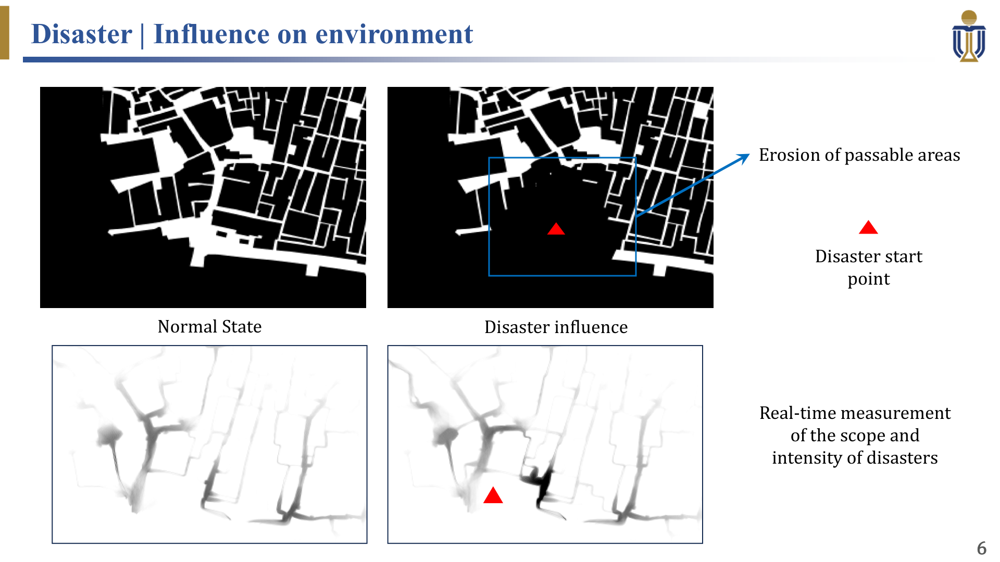
The hazard footprint removes passable cells around the marked junction, changing the feasible route network used by the global guidance field.

The animation shows the intended controller response as the field update redirects compliant pedestrians through still-passable alternatives.
| Strategy | Density information | Hazard information | Field update | Interpretation |
|---|---|---|---|---|
| Static | No | No | Computed once | Pure geometric distance-to-exit reference |
| Density-60 | Yes | No | Every 60 s | Congestion-aware efficiency baseline |
| DH-60 | Yes | Continuous cost + blocking | Every 60 s | Hazard-aware alternative |
Clearance and exposure are reported separately
Each metric is defined at run level and then summarized across the identified ensemble. This prevents a within-run quantile from being confused with a cross-run risk measure.
T0.95 and T0.99
Tail clearance times capture the late portion of the evacuation process that mean clearance can conceal.
Σs
Population accumulation of the model-based continuous risk score over agents and active time steps.
H
Cumulative agent–time-step pairs above the severe-risk threshold RH = 4.5.
Calibration before strategy comparison
The microscopic movement model is checked against empirical fundamental diagrams and meso-level flow–width relationships before the navigation strategies are evaluated.
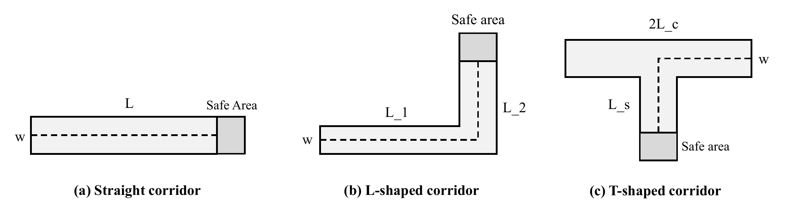
Canonical geometries support meso-level validation beyond a single corridor width.
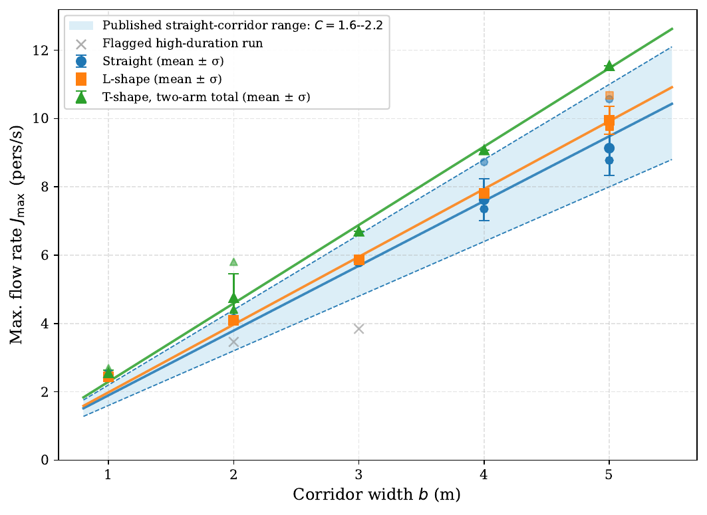
Simulated capacities are compared with empirical and reference relationships under the screened calibration.
Crowd evolution across canonical corridor geometries
The animations provide a qualitative view of simulated pedestrian movement, density accumulation, and discharge through straight, turning, and merging layouts. They complement the quantitative calibration figures above; the animations themselves are not treated as standalone validation evidence.
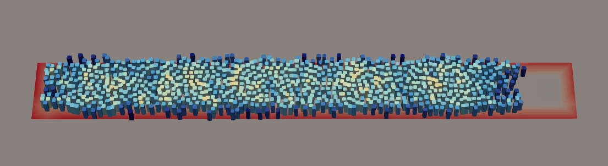
Longitudinal crowd propagation and discharge under a canonical straight-passage configuration.
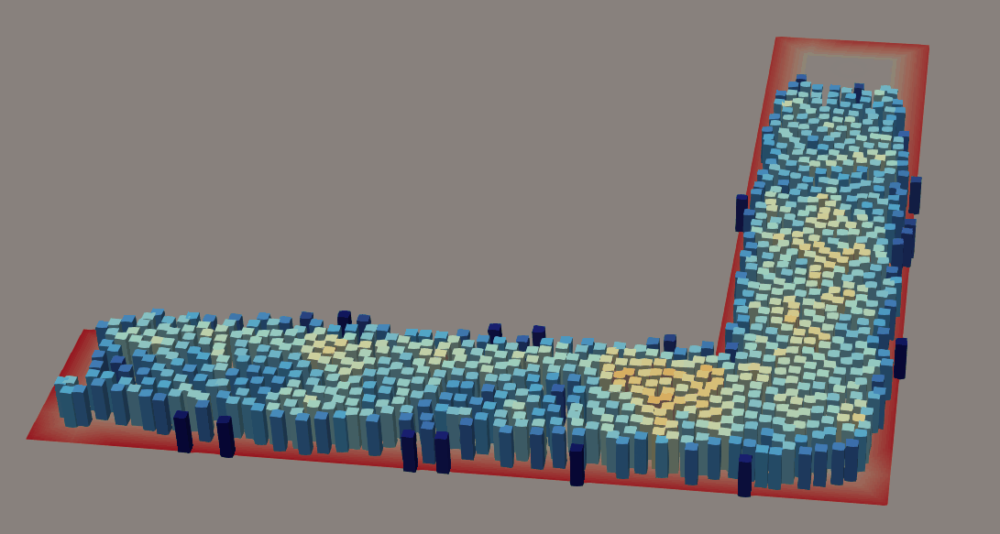
Turning behavior and local density redistribution around a right-angle bend.
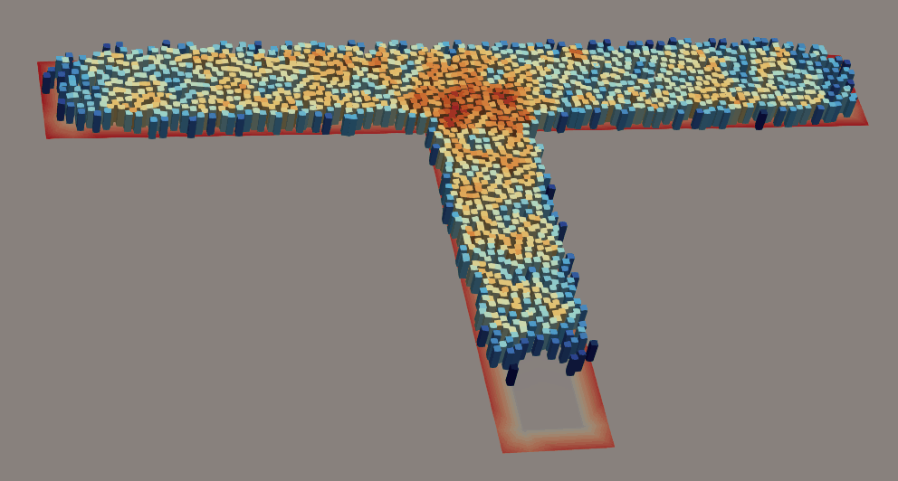
Merging streams and localized congestion near the intersection of three corridor branches.
Selecting a practical operating point
Hazard weight and update frequency are calibrated separately so their roles remain interpretable before the operating point is transferred to Shipai.
Hazard weight β
Across β = 0.1–10.0 s/m, the cross-run upper T0.95 rises by 38.0%, while upper population exposure falls by 29.1%. Moving from β = 0.1 to 1.0 reduces exposure by 20.3% at an 8.1% time cost. Moving from 1.0 to 10.0 yields a further 11.1% exposure reduction but adds a 27.7% tail-time penalty.
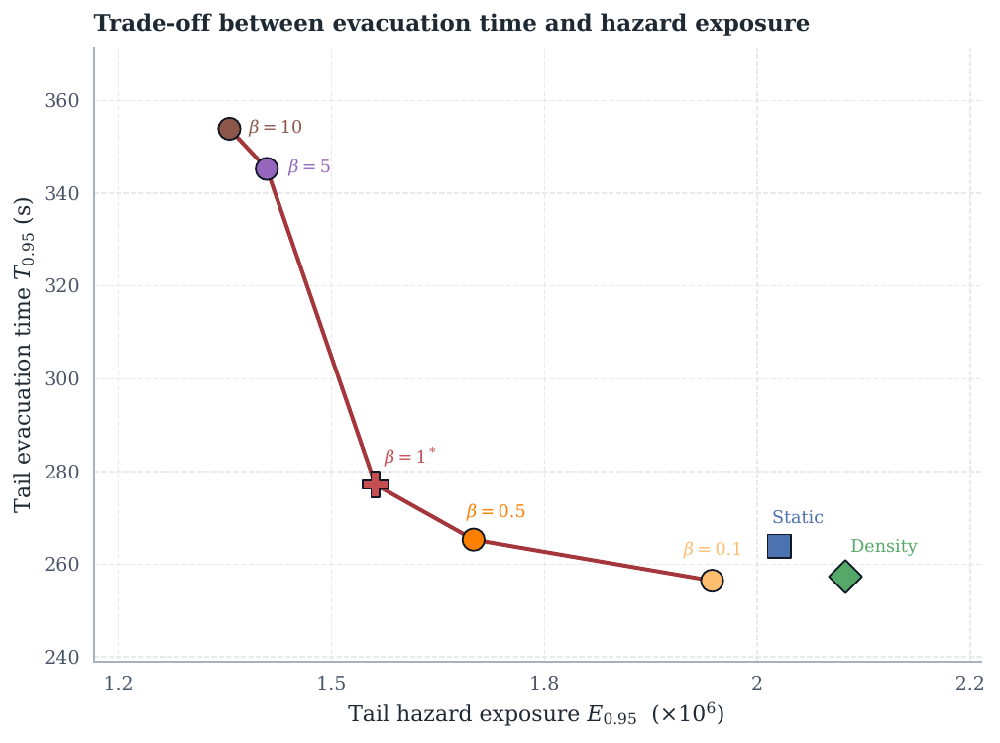
β = 1.0 marks a knee before the high-β time penalty dominates.
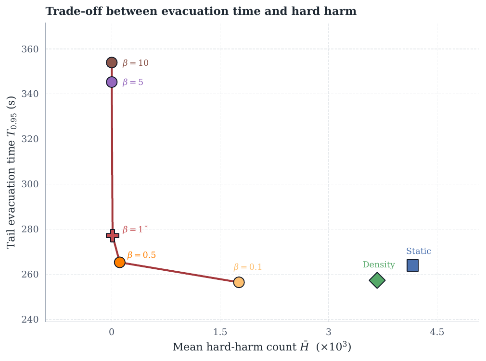
β = 1.0 nearly eliminates Hard Harm without the much longer detours at β ≥ 5.
Field-update period Δtu
A 10 s update produces the largest clearance and congestion gains but requires 5.59× the Static computation time. The 60 s period increases mean T0.95 by only 15.0 s relative to 10 s while reducing total runtime by a factor of 3.4 and field-update cost by 5.7×.
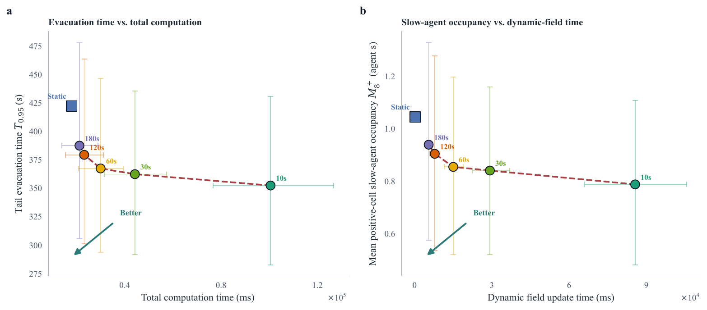
The selected 60 s period balances tail evacuation quality and online recomputation cost.
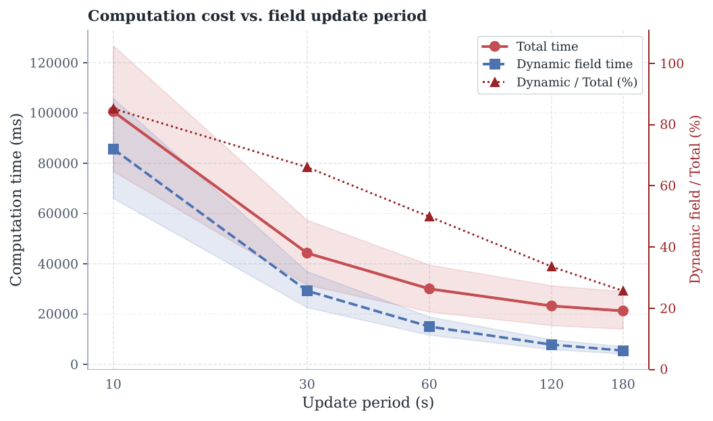
The CPU-side global-field update is the principal online bottleneck at short periods.
Shipai separates efficiency from safety
The operating point is tested on a larger, more irregular network with randomized upper-load demand of 40,087–49,892 agents. These populations are computational stress tests rather than demographic estimates of simultaneous evacuation.

Remote-sensing base map, building footprints, and pedestrian network used to construct the full-scale domain.
| Strategy | Mean T0.95 | Mean T0.99 | Mean Soft Risk | Mean Hard Harm |
|---|---|---|---|---|
| Static | 1114 s | 1431 s | 43.11 × 106 | 2649.5 × 103 |
| Density-60 | 956 s (−14.1%) | 1228 s (−14.2%) | 26.59 × 106 (−38.3%) | 451.5 × 103 (−83.0%) |
| DH-60 | 961 s (−13.7%) | 1191 s (−16.8%) | 9.39 × 106 (−78.2%) | 2.86 × 103 (−99.9%) |
Paired comparison
DH-60 minus Density-60 is 4.6 s for T0.95 (95% CI −15.3 to 22.6 s) and −36.8 s for T0.99 (95% CI −122.1 to 31.3 s). Both intervals include zero. The analysis therefore does not detect a mean tail-time difference at this operating point, but it does not establish equivalence. The much larger separation is in Soft Risk and Hard Harm.
Similar congestion relief, different route safety
Density-60 and DH-60 both disperse persistent load away from overloaded Static corridors. DH-60 additionally prevents the redistributed flow from accumulating along hazardous alternatives.
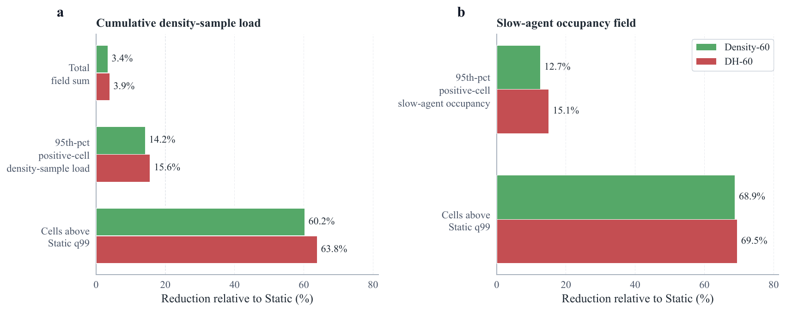
Both dynamic strategies reduce hotspot magnitude and spatial extent.
Persistent hotspot reduction
For Density-60 and DH-60, respectively:
- 95th percentile cumulative density load: −14.2% and −15.6%
- High-load cell count: −60.2% and −63.8%
- 95th percentile congestion duration: −12.7% and −15.1%
- Long-duration congestion cell count: −68.9% and −69.5%
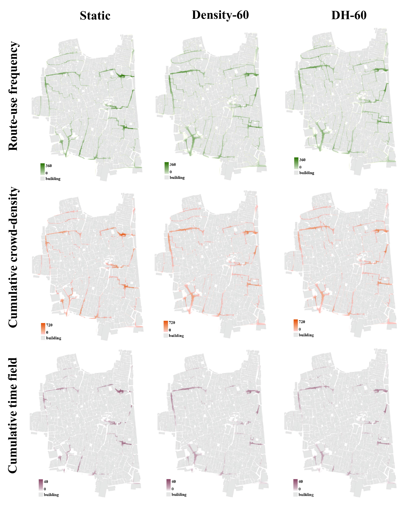
Columns compare Static, Density-60, and DH-60; rows show route use, cumulative density load, and congestion duration for one paired scenario.
Hazard-source stratification confirms the pattern across near-exit, near-main-road, and far-from-both classes. DH-60 reduces class-specific Soft Risk by 74.6–83.7% and nearly eliminates Hard Harm, while source placement changes exposure far more strongly than tail clearance.
What transfers—and what does not
The simplified network and Shipai differ by roughly an order of magnitude in agent count and substantially in topology. The comparison supports a two-stage screening workflow, not morphology-independent parameter universality.
Intended operating behavior
The selected hazard weight remains near a practical efficiency–exposure balance, and DH-60 retains the lowest model-based exposure indicators.
Time cost of hazard avoidance
DH has a +7.7% tail-time penalty on the simplified network, but only a +0.5% point estimate on Shipai; the paired CI includes zero.
Path redundancy
More alternative path families can absorb hazard-driven redirection at a lower marginal time cost.
Limitations and future directions
- Agents fully comply with the navigation field; behavioral heterogeneity, groups, and partial compliance are not represented.
- The hazard field is parameterized rather than physics-based. Results concern relative routing performance, not absolute fire or toxic-exposure prediction.
- Hazard-parameter sweeps demonstrate field response, not outcome-level ranking robustness.
- Reliability evidence comes from scenario ensembles and tail-sensitive statistics, not converged exceedance probabilities or CVaR estimates.
- The two-dimensional formulation excludes vertical evacuation and terrain effects, and cross-morphology generality remains open.
Efficient evacuation and safe evacuation are non-equivalent objectives
The study shows that congestion-aware routing can improve clearance without adequately controlling exposure. At the calibrated operating point, Density-60 and DH-60 have similar mean tail-clearance behavior on Shipai, yet DH-60 produces far lower Soft Risk and Hard Harm because it changes which alternative routes remain attractive as the hazard evolves.
- The framework connects calibrated pedestrian movement, online density-dependent travel cost, continuous hazard cost, and hard blocking.
- The paired Shipai confidence intervals do not detect a mean tail-time difference between Density-60 and DH-60; they do not prove equivalence.
- DH-60 reduces Soft Risk by 78.2% and Hard Harm by 99.9% relative to Static, compared with 38.3% and 83.0% for Density-60.
- β* = 1.0 and Δtu* = 60 s define a practical tested operating point, not a universal optimum.
- Simplified-network calibration is useful as a screening step only when followed by target-domain verification.
- Evacuation planning should report T0.99, Soft Risk, and Hard Harm with an explicit ensemble functional rather than rely on mean clearance alone.
Original figures
Selected paper-format vector figures used in the website remain available for detailed inspection.